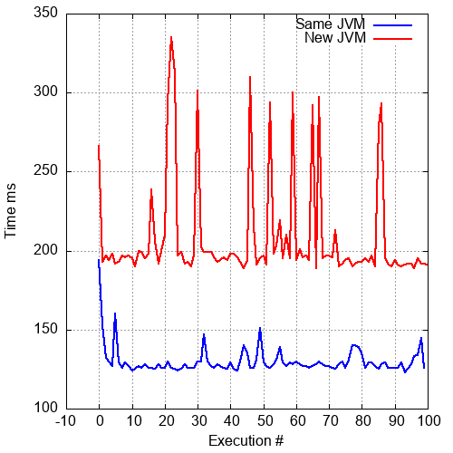

Peeking into the JVM
1 Introduction
- Some details inside the JVM
- How the JVM fits into the bigger picture
- It's a big subject, we won't get to all of it
- Why I think the JVM is cool
2 What is the JVM
- Part of the Java Platform
- Java is a tool for producing software in a platform independant way
- Compile code once, run it anywhere (in theory)
- Sandboxing
3 Native code
In order to run code it has to be converted to a set of instructions that the CPU on that machine understands.
So the traditional process for developing software is to compile the source code into the instruction set that a specific computer architecture understands.
And then in order to run it on another architecture, it needs to be recompiled first, and any architecture specific portions (such as the GUI etc) may need to be 'ported' or rewritten to work on the new platform.
If you want to run the software on a platform to which it hasn't been ported, you are out of luck (other than porting it yourself of course).
4 Java model
The JVM follows a different model. Instead of compiling the code to native instructions for each platform, it is compiled once to a generic "bytecode".
bytecode is a very simple instruction set and it is designed to be executed very fast by the CPUs. It consists of simple instructions that move data onto and off a stack, simple arithmetic etc.
This is still a compilation, because the bytecode designed to be much simpler and quicker to execute.
Of course you still can't run this bytecode on the machine, because the CPU doesn't understand those instructions. So you need an 'interpreter', which is a piece of software that will interpret and execute this bytecode.
This means that the software developer can create and compile their software once and it will run identically (in theory) on any platform that has a Java bytecode interepreter available. This is the Java Virtual Machine, or JVM.
So it is decoupling the software creation process from the execution platform. To support a new platform, you port the JVM and all of the existing software will start working on it without having to be recompiled.
It's worth pointing out here that this isn't quite the whole picture: as we said earlier the Java bytecode is a very simple, low-level architecture suitable for abstracting computation. But there is still a higher level at which the platforms differ, so for example, the process of locating and opening a file will be potentially very different on a Windows machine compared to say a Linux one.
So the Java Runtime Environment, as well the JVM, also includes a
massive and extremely comprehensive standard library that Java
software can rely on to provide an, again entirely platform
independant abstraction over these details, allowing us to just
option, for example a FileInputStream and not have to worry about
how that is actually implemented on each platform.
4.1 Standard library
- A much higher-level of abstraction
- On each platform, it knows how to, e.g
- open a network socket
- load classes
- find a file by name
- etc.
- Provides higher-level data structures and utilities
- List
- InputStream
- Encryption
- etc.
- Adds new features all the time, e.g. Java8 → Java9 etc
4.2 The Java Specification

5 What's in the JVM?
5.1 Heap
- Memory where objects etc are allocated
- Global in the VM instance (i.e. shared across threads)
- Allocated data remains until de-allocated
- Garbage collected to automatically de-allocated unused items
5.2 Methods
- The stage space where executable bytecode loaded from class files is stored.
5.3 Threads
- An individual execution state
5.4 Stacks
- Ephemeral storage
- Local variables
- Unique to a thread
5.4.1 Call stack
5.4.2 Call stack - visit
5.4.3 Call stack - return
5.4.4 Stacktrace
public class Excep { public static void fn2() throws IllegalArgumentException { throw new IllegalArgumentException(); } public static void fn1() throws IllegalArgumentException { fn2(); } public static void main(String[] args) throws IllegalArgumentException { fn1(); } }
Exception in thread "main" java.lang.IllegalArgumentException at Excep.fn2(Excep.java:3) at Excep.fn1(Excep.java:7) at Excep.main(Excep.java:11)
6 What does bytecode look like?
- 1-byte opcode specifying operation to be performed
- Followed by zero or more operands
- the specific bytecode defines how many of what type of operands it takes
- Very little typing
- the compiler still has to do that work before generating the bytecode.
- primitive types, int, long etc.
referencetype
6.1 yeah but I want to see it
- We can use
javapto disassemble class files and take a look.-cto include 'disassembly' to byte code-verboseto include the constant pool
6.2 A simple example - Java source
Java code:
public void count(int max) { int i = 0; while(i < max) i++; }
6.3 A simple example - bytecode
6.4 A simple example - bytecode 2
6.5 A simple example - bytecode 3
6.6 A simple example - bytecode 4
6.7 A simple example - bytecode 5
6.8 A simple example - bytecode 6
7 The Class file
- Bytecode is stored in a Class file (e.g. on disk etc)
- Each class file contains the definition of a single class, interface, or module
- Used at compile time as well as run-time
7.1 Class file format
- A stream of platform-agnostic bytes
- e.g. always big-endian etc.
- Usually stored on disk but really it is anything created by a class loader
- could come from network
- or even be generated dynamically
Slightly glossing over some of the details, the way the JVM loads an application is by identifying the classes that it needs to run, searching the Classpath for some on-disk (or on-network) representation of these classes, and then it loads them in memory and instantiates them as neccessary. Classes as the JVM sees them have many of the properties that exist at the higher-level of the languages used to create those classes, such as methods with associated visibility, and properties etc.
The fact that the JVM understands Classes and methods and so on is an indicator that it does exist at a higher-level than native machine-code, so the JVM does need to do a fair bit more work than just loading code into memory and executing it.
7.2 Header
- Magic Constant that identifies the beginning of the stream as a Class File
- Version number
$ hexdump -C Count.class 00000000 ca fe ba be 00 00 00 38 ...
7.3 Constant pool
- Avoids having to repeat constants over and over again
- Constants are just appear as an index into this table
0: ldc #2 // String Hello World 2: astore_1
7.4 Method definitions
The core instructions which define the computations.
8 Optimisations
- The spec just defines the external view of the behaviour
- Lots of scope to improve the way the JVM performs without changing it's behaviour at the abstract level
8.1 Just-In-Time compilation
- Code actually gets faster the more it runs

8.1.1 Compile to native code
- The JVM is capable of compiling to native code on the fly
- But compiling takes time
- If a piece of code only runs once, for less time than it takes to compile it, you don't save time
8.1.2 Compile only when needed
- The JVM detects 'hot' code
- code which is executed many times
- and compiles it after a certain threshold
9 Garbage Collector
- Tracks references to objects
- Frees the memory when they are no longer referenced / reachable
- Removes the burden on the programmer to manage memory
9.1 Marking phase
- searches all objects to see which are accessible
- marks objects as used or unused
- can take a very long time if all objects need to be searched
9.2 Deletion phase
- frees up space by deleting objects marked as unused
- results in fragmented free space
- which can affect performance
9.3 Compaction phase
- moves objects around to make contiguous free space
- requires freezing the VM so it can move objects around
9.4 Optimisations
- Generational collector
- most objects are short lived
- limit 'minor' collections to just young objects
- quicker because it searches fewer objects
- Concurrent sweep
- don't stop the world
- cannot compact memory
- etc…!
10 Graal
10.1 A new(ish) JVM
- Written in Java
- Provides compilers and runtimes for many non-Java languages
- Javascript, Ruby etc
- Ahead-of-time compiler:
- compiles bytecode to native
- Still follows the same concepts as those outlined here
- just a better implementation of them
11 References & more info
- Crafting Virtual Interpreters - "A handbook for making programming languages."
- Invoke Dynamic - from article "Java Virtual Machine Support for Non-Java Languages"
- Java VM Specification
- Java Garbage Collection Basics
- Top Ten Things to do with GraalVM